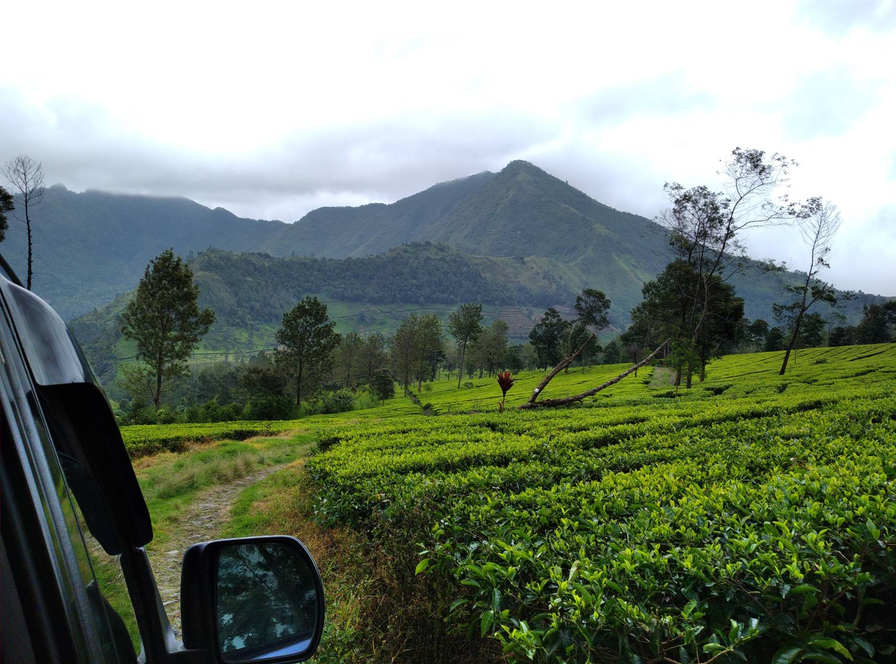

Paket Wisata Dieng
Daftar link paket wisata Dieng lengkap dari berbagai sumber, memudahkan Anda memilih tour sesuai kebutuhan.
Daftar link paket wisata Dieng:
- Paket Wisata Dieng - Putra Tour Dieng (Wonosobo, Indonesia) - Review - Tripadvisor
- Beli Tiket Paket wisata Dieng - Harga Promo di Traveloka
- Explore Dieng (Wonosobo, Indonesia) - Review - Tripadvisor
- Private Trip Dieng — bebas tentukan destinasi & durasi. Paket lengkap transport & homestay, cocok untuk keluarga/rombongan kecil. 👉 Klik untuk cari paket.
- Cari paket wisata Dieng Wonosobo murah & fleksibel? Private/rombongan 1D–3H2M, penjemputan & penginapan siap. Harga mulai 500rb, cocok buat liburan hemat & nyaman 👉 klik di sini.
- Paket Wisata Dieng Paling Lengkap – Program Paket Tour Terbaru
- Cari paket travel ke Dieng? Dapatkan harga terbaik Paket Wisata Dieng mulai dari Rp500.000/pax. Tour ke Dieng bareng Sikunir.com, layanan private trip Dieng, fasilitas lengkap.
- Paket wisata Dieng sesuai budget kamu. Bebas tentuin mau ke mana, makan di mana, sampai nginep di hotel pilihan kamu!
- Kini hadir paket wisata Dieng dengan meeting point dari Jogja, Semarang, Purwokerto, Wonosobo, Solo, dan kota-kota lainnya. Kamu yang dari Jakarta bisa langsung pilih paket tour favorit, fasilitas lengkap, harga mulai 525.000/pax untuk One Day Tour Dieng. Rencanakan liburan seru ke Dieng, semua sudah disiapkan dengan nyaman dan praktis dalam satu paket!
- Temukan sisi lain Dieng dengan paket wisata fleksibel dan pengalaman autentik. Udara sejuk, spot alam unik, dan perjalanan yang selalu terasa personal—semua ada di sini.
- Pilih paket wisata Dieng harga hemat sesuai kebutuhanmu — Paket 1 hari, 2 hari 1 malam, atau 3 hari 2 malam. Semua sudah termasuk transport, tiket wisata, makan, dan fasilitas utama. Bisa berangkat dari Jogja, Purwokerto, Semarang, Solo, dan Wonosobo.
- Wikipedieng.com menyediakan solusi lengkap untuk liburan kamu ke Dieng dengan layanan Paket Wisata Dieng, serta penginapan nyaman di Afinda Homestay dan Risa Homestay. Semua dirancang untuk pengalaman liburan yang mudah, hemat, dan berkesan.
- Cari ide paket wisata Dieng? Temukan paket tour Dieng yang dirancang untuk menghadirkan perspektif baru pada alam, budaya, dan pengalaman lokal.
- Paket Wisata Dieng terbaik untuk Explore Dieng. Temukan keindahan alam, budaya, dan destinasi menakjubkan di dataran tinggi Dieng.
- Cari paket wisata Dieng yang terstruktur dan siap pakai? Jelajahi sunrise Sikunir, Telaga Warna, Candi Arjuna, Jeep Adventure, hingga paket privat & rombongan (1D, 2D1N, 3D2N).
- Paket Wisata Dieng — versi terbaikmu. Paket wisata Dieng yang kamu mau — sunrise Sikunir, jeep, 1–3 hari, meeting point bebas — lihat rekomendasi terbaik bermunculan di sini.
Paket Wisata Dieng dari Jogja
- Berangkat dari Jogja ke Dieng sekarang makin mudah! Tersedia pilihan paket private trip 1 hari, 2 hari 1 malam, dan 3 hari 2 malam untuk rombongan keluarga, teman, atau kantor.
- Paket Wisata Dieng dari Jogja – Private Trip & Family Tour, Berangkat Setiap Hari
- Mau liburan ke Dieng dari Jogja tanpa repot urus transport, itinerary, dan akomodasi? Paket wisata Dieng keberangkatan Yogyakarta ini siap mengantar kamu explore semua destinasi ikonik Dieng dalam satu perjalanan yang praktis dan nyaman
- Rekomendasi paket wisata ke Dataran Tinggi Dieng. Tersedia pilihan dari Jogja, Semarang, Solo, Purwokerto, dan kota lainnya.
Paket Wisata Dieng dari Semarang
Paket Wisata Dieng dari Purwokerto

- Cari paket wisata Dieng dengan start point Purwokerto? Ini dia solusi buat kamu yang naik kereta dari Jakarta, Bandung, Surabaya, atau kota lainnya! Begitu turun di Stasiun Purwokerto, tim sudah siap jemput—meeting point bisa di stasiun, hotel, atau titik mana aja di dalam kota.
- Paket wisata Dieng dari Purwokerto adalah pilihan tepat buat kamu yang mau liburan praktis, berangkat dari kota sendiri, dan bisa menyesuaikan waktu serta kebutuhan trip. Semua sudah termasuk transportasi, tiket, makan, dan guide
Paket Wisata Dieng dari Wonosobo
- Paket Wisata Dieng dari Wonosobo – 1-3 Hari, Santai & All-In
- Panduan Lengkap Cara Memesan Paket Wisata ke Dieng
- Paket wisata Dieng membuka pintu menuju pesona dataran tinggi yang berbeda, di mana kabut pagi menari lembut di antara bukit, telaga memantulkan langit yang berubah warna, dan aroma tanah vulkanik menyapa setiap langkah.
- Paket wisata Dieng adalah serangkaian layanan perjalanan terorganisir yang dirancang untuk memfasilitasi kunjungan wisata ke kawasan dataran tinggi Dieng, yang terletak di perbatasan Kabupaten Wonosobo dan Banjarnegara, Provinsi Jawa Tengah.
Paket wisata lainnya
- EO Wisata Dieng – Outing, Outbound, dan Gathering
- Paket Wisata Dieng 2 Hari 1 Malam
- Harga Paket Wisata Dieng Lengkap dari Jogja, Wonosobo, Purwokerto, Semarang, dan Solo
- Paket Wisata Dieng untuk 2 Orang – Private Trip, Fleksibel, dan Fasilitas Lengkap
- Paket Jeep Dieng – Harga terbaik sewa Jeep wisata Dieng
- Explore Dieng
- EO Dieng
- Private Trip 3 Hari 2 Malam
- Solo trip Dieng
- Private Trip Dieng untuk 2-5 Orang
- Pilihan Paket Jeep Dieng
- Paket wisata Dieng untuk 2 orang, pilihan tepat untuk menikmati udara pegunungan, sunrise indah, dan suasana tenang bersama orang terdekat, tanpa digabung rombongan lain.
- FAQ Seputar Paket Wisata Dieng
- NO WA / WhatsApp Paket Wisata Dieng
- Paket Bulan Madu Dieng – Private Escape untuk Cerita Baru Berdua